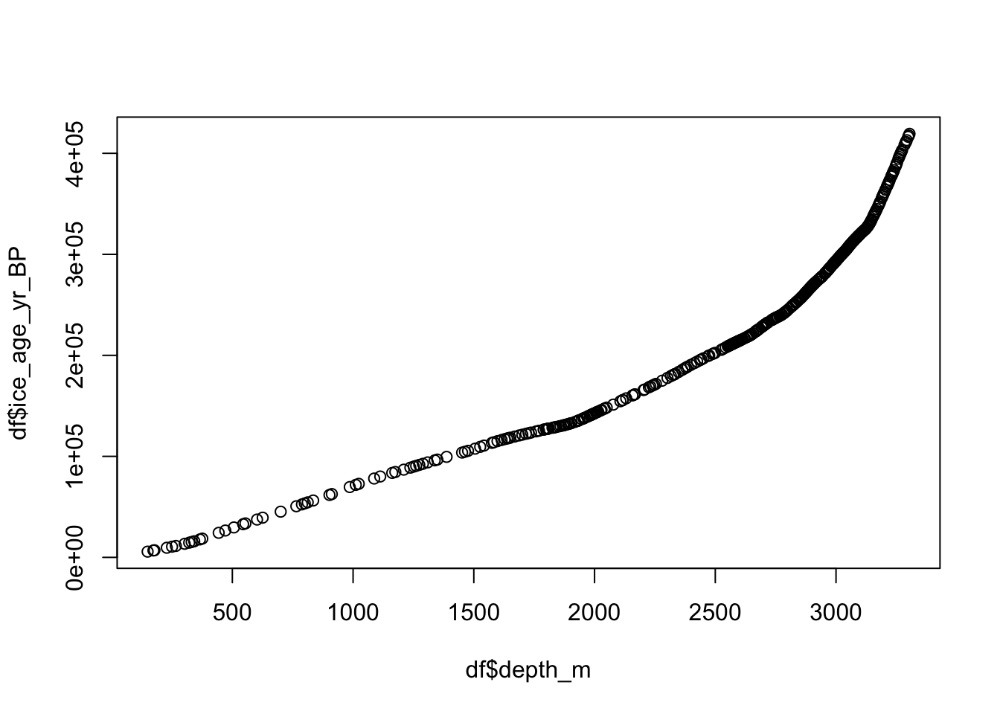
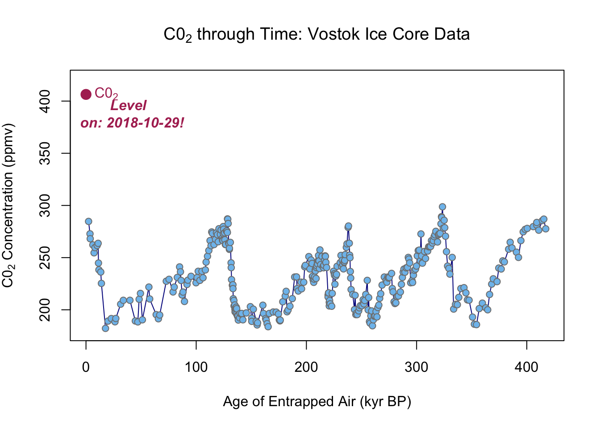
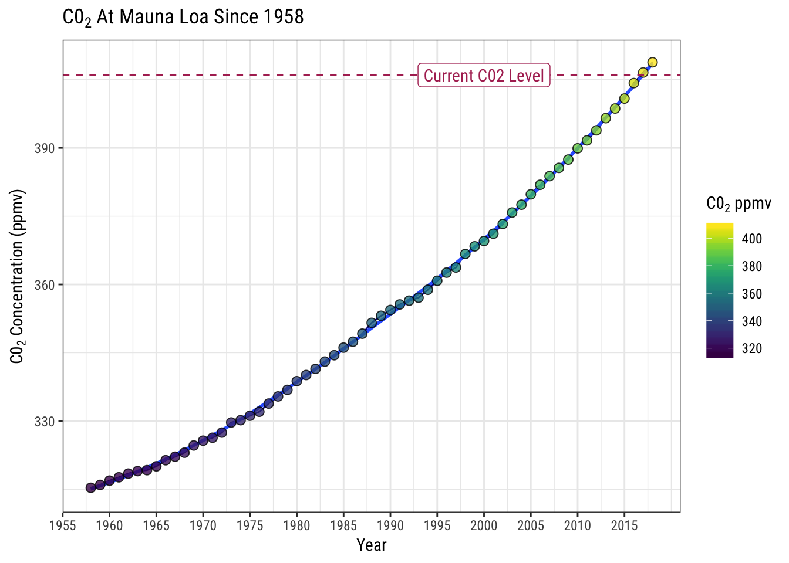

Example: Download & Plot Data from the Web
This lesson is meant to walk through a complete pipeline of how to download some data from the web, tidy it, look at a simple analysis, and visualize that data. We’ll be using data on historical and current CO2.
Historical C02 Record from Vostok Ice Cores
How do we know the C02 levels are higher now than compared with natural cycles observed through time? Thankfully we have ice cores that date back over 400,000 years ago. By analyzing the tiny bubbles trapped for eons deep1 within the ice at known points in time (based on the depth of the ice layer), it’s possible to reconstruct a record of C02 on Earth over a very long period of time.
These data are publically available as a simple text file here, and a full description of the metadata is here.
Download the Data
First, we’ve shown a few ways to download data from a URL, so let’s see if folks can take a look at this data, and download it using the following URL:
http://cdiac.ornl.gov/ftp/trends/co2/vostok.icecore.co2
- Why can’t we use
read_csv? - Can we use
read.table? - Why did we specify
skip=20?
library(readr)
df <- read_tsv(
file = "http://cdiac.ornl.gov/ftp/trends/co2/vostok.icecore.co2",
skip = 20,
col_names = c("depth_m","ice_age_yr_BP", "air_age_yr_BP", "C02_conc_ppmv"))## Parsed with column specification:
## cols(
## depth_m = col_double(),
## ice_age_yr_BP = col_integer(),
## air_age_yr_BP = col_integer(),
## C02_conc_ppmv = col_double()
## )## # A tibble: 6 x 4
## depth_m ice_age_yr_BP air_age_yr_BP C02_conc_ppmv
## <dbl> <int> <int> <dbl>
## 1 149 5679 2342 285
## 2 173 6828 3634 273
## 3 177 7043 3833 268
## 4 229 9523 6220 262
## 5 250 10579 7327 255
## 6 266 11334 8113 260## [1] 363 4Ok now that we have our data read into R, is the data tidy? How can we check if there are NA’s in the data? Let’s move to some visualization now.
Plot The Data (using base)
If we want to make a plot using base R, we can use the following code. Let’s compare this to what we might do if we wanted to plot this in ggplot. Notice that the with() function is just a way to “attach” the data so we don’t have to use the data$ convention when we want to specify a column in our dataframe.

# now baseplot of age vs. CO2 concentration
with(df, plot(x=air_age_yr_BP/1000, y=C02_conc_ppmv,
type = "l", col="darkblue",
ylab=expression(paste("C0"[2] ," Concentration (ppmv)"), sep=""),
xlab="Age of Entrapped Air (kyr BP)",
main=expression(paste("C0"[2]," through Time: Vostok Ice Core Data", sep="")),
ylim=c(180, 420)))
# add another "layer" (similar to using the geom_ in ggplot)
with(df, points(x=air_age_yr_BP/1000, y=C02_conc_ppmv,
xlab=NULL, ylab=NULL, pch=21, col="gray50",
bg="skyblue2"))
# plot modern CO2 levels (notice we aren't using a data frame but giving a single data point location): (FOUND HERE: https://www.co2.earth/daily-co2)
points(x=0, y=406.38, pch=16, col="maroon", cex=1.7)
# add some text
text(x=0, y = 405, labels = expression(paste(C0[2])),
font = 4, col="maroon", pos=4)
text(x=40, y= 405, labels= paste0("Level \n on: ", Sys.Date(), "!"),
font = 4, col = "maroon", pos = 1)
Remember, to use these base plot options, you have to always call a plot() first, and then points() or lines(). It won’t work if you try to do it the other way around. Also, the use of the expression() is a way to make formulas, scientific notation, etc. look correct in your plots.
Plot The Data (using ggplot2)
Ok, now let’s try something similar in a ggplot version, with the same pieces as above, but see if you can try to add the following components (don’t feel you need to do all of them…try a few before you look at the code below!)
- Color the points by the Ice Core Depth (
depth_m) using theviridispackage - Scale the y-axis to a range of
c(180, 420) - Add a dashed horizontal line for the max CO2 value (406.38)
- add a label with a white background saying “Current CO2 Level”
- Change the legend title to say “Ice Core Depth (m)”
suppressPackageStartupMessages({
library(ggplot2);
library(dplyr);
library(viridis) # for nice color scheme
})
ggplot() +
geom_line(data=df, aes(x=air_age_yr_BP/1000, y=C02_conc_ppmv),
color="gray20") +
geom_point(data=df, aes(x=air_age_yr_BP/1000, y=C02_conc_ppmv, fill=depth_m), pch=21) +
scale_fill_viridis("Ice Core \n Depth (m)") +
scale_y_continuous(limits = c(180, 420)) +
labs(x="Age of Entrapped Air (kyr BP)", y=expression(paste(C0[2]," Concentration (ppmv)", sep=""))) +
geom_hline(yintercept=406, col="maroon", lty=2) +
annotate(geom = "point", x = 0, y=406.4, col="maroon",pch=16, size=4) +
ggtitle(expression(paste("C0"[2]," through Time: Vostok Ice Core Data", sep=""))) +
geom_label(data=NULL, aes(x=20, y=400, label="Current C02 Level", family="Roboto Condensed"),
col="maroon", nudge_x = 30) + theme_bw(base_family = "Roboto Condensed")
Ok! What parts did you remember? What parts did you google? (FYI: I google this stuff all the time!)
Map of Site
Let’s make a map of where our data have been collected. Vostok is located in Antarctica at the following coordinates:
Vostok, Antarctica, -78.4645° S, 106.8340° E, 3488 m above MSL
The following code will demonstrate how to convert these data into something we can plot on a map. We’ll need a few new packages here, maps, mapdata, and measurements.
Convert Lat & Long
If copy and paste the above data into R, we may run into a few problems. First, the ° symbol. We need to strip that from the data. Here’s how to do that, and make a simple data frame of our coordinates.
#library(measurements) # for converting data
# change the degree symbol to a space with gsub
xlat <- gsub(pattern = '°', replacement = '',x = '-78.4645°')
xlon <- gsub('°', '','106.8340°')
# make a data frame of our points
ice<-data.frame("x"=as.numeric(xlon), "y"=as.numeric(xlat))
# side note, if you want to convert from decimal deg to deg_minute_second with "measurements package"
#xlat <- measurements::conv_unit(xlat, from = 'dec_deg', to = 'deg_min_sec')
#xlon <- measurements::conv_unit(xlon, from = 'dec_deg', to = 'deg_min_sec')Locate Point and Map
Now that we have our lat/long point, we can find out where it is with map.where. This could be handy if you get some points and aren’t sure where they are. Then plot a basic world map with our location.
##
## Attaching package: 'maps'## The following object is masked from 'package:purrr':
##
## maplibrary(mapdata) # map data
# here's a nice way to simply see where your point is verbally...
map.where(database = "world", x=ice$x, y=ice$y)## [1] "Antarctica"# flat map
map(database = "world", plot=TRUE, fill = TRUE, col="gray80")
map.axes() # add axes
points(x = ice$x, y = ice$y, pch=21, bg="red", cex=2) # add the points
title(main = "Vostok, Antartica", sub = "Location of ice core data") # add a title# let's make a globe/spherical map
# reproject points
ice_proj <- mapproj::mapproject(ice$x, ice$y,projection = "globular")
# and an actual world map
map(database = "world", wrap = TRUE, plot=TRUE, fill = TRUE, col="gray80",
projection="globular") # just the map, no points
#map.axes() # add axes
points(x = ice_proj$x, y = ice_proj$y, pch=21, bg="red", cex=2) # add the points
title(main = "Vostok, Antartica", sub = "Location of ice core data") # add a titleWhat About C02 Today?
A good site to check the current C02 emission level is here. NOAA’s site provides trends across different time stamps, dating back to 1959 using measurements from the Mauna Loa Observatory.
Let’s pull the annual measurements using the same commands we used above, clean the data, and plot it with ggplot. Let’s also add a loess regression line using geom_smooth.
library(dplyr)
library(viridis) # for colors
# notice here we can use the base R read.table() function, it automatically ignores any lines that start with "#"
df2 <- read.table(file = "ftp://aftp.cmdl.noaa.gov/products/trends/co2/co2_mm_mlo.txt", col.names = c("year", "mon", "dec_date", "avg_C02", "interpolated_C02", "trend_seas_corr", "no_days"))
# use dplyr to filter and summarize daily data to annual, get rid of missing/NAs (values -99)
df_ann <- df2 %>%
filter(avg_C02 > 0) %>%
group_by(year) %>%
summarize(ann_C02=mean(avg_C02, na.rm=T))
# plot
ggplot() +
geom_line(data=df_ann, aes(x=year, y=ann_C02), color="darkblue") +
labs(x="Year", y=expression(paste(C0[2]," Concentration (ppmv)", sep=""))) +
geom_smooth(data=df_ann, aes(x=year, y=ann_C02)) +
geom_point(data=df_ann, aes(x=year, y=ann_C02, fill=ann_C02), pch=21, cex=2.5, alpha=0.8) +
scale_fill_viridis(expression(paste(C0[2], " ppmv"))) +
geom_hline(yintercept=406, col="maroon", lty=2) +
geom_label(data=NULL, aes(x=1970, y=406,
label="Current C02 Level"), col="maroon", nudge_x = 30, family="Roboto Condensed") +
scale_x_continuous(breaks = seq(1955,2017,5), labels = seq(1955,2017,5)) +
ggtitle(expression(paste(C0[2]," At Mauna Loa Since 1958"))) +
theme_bw(base_family = "Roboto Condensed")## `geom_smooth()` using method = 'loess' and formula 'y ~ x'
Web Scraping Multiple Files
So far we’ve just looked at pulling a single file from a website. What about many files? Often data are provided in separate pieces as multiple files (i.e., one file per day or month over a long period of time). Let’s take a look at how we might pull data and then aggregate, analyze, and visualize it.
Fine Scale Meterological Data: Mauna Loa
There’s an abundance of meterological data available on many repositories and websites, but let’s continue along the C02 related data and pull some fine-scale meterological data from the Mauna Loa station. This is met. data collected every minute for a whole year.
The metadata for this is available here. Data used in this example is all here (minute scale met data).
Downloading Multiple Files from an FTP site
Advanced Material…be patient, this is a demo showing it can be done. This data is available (pre-downloaded and zipped up) on github here.
To download all these in one go, let’s try using some Terminal/BASH code! There should be a Terminal tab built right into RStudio, so we’ll try using that for now. Hopefully you’ll be able to install wget on most any platform.
Let’s first go to Tools > Terminal > New Terminal. Once that window is open, let’s try the following code.
Aggregating Multiple Files
So we have 12 files, each a month worth of measurements taken every minute, which is roughly (44,000 measurements * 12 months), or about a half million lines of data. Give or take.
First step, how do we read in this many files at once and merge them into one file?
Read in Multiple Files and bind into one file
We’ve talked briefly about using purrr which is a way to loop through and do the same task over and over. It’s purrrfect for this task.
require(readr) # for read_csv()
require(dplyr) # for mutate()
require(tidyr) # for unnest()
require(purrr) # for map(), reduce()
folder <- "data/2001_mauna_loa_met_data" # the folder where the data lives
files_list <- dir(path = folder, pattern = "*.txt") # list all files in that folder ending with .txt
# Option 1: Simple version, read all files in as one dataframe
data <- files_list %>%
purrr::map(~read.table(file.path(folder, .), header = FALSE)) %>% # read in all the files individually
reduce(rbind) # reduce with rbind into one dataframe
# add column names to the dataframe
colnames(data)<-c("siteID", "year", "month", "day", "hour24", "min", "windDir", "windSpeed_m_s", "windSteady", "baro_hPa", "temp_C_2m", "temp_C_10m", "temp_C_towertop", "rel_humid", "precip_intens_mm_hr")
head(data)
dim(data)
## Option 2: read in files & add column with the filename along with all the data from that file, then combine into one dataframe
data <- data_frame(filename = files_list) %>% # create dataframe with column of the filenames
mutate(file_contents = map(filename, # read files in
~read.table(file.path(folder, .), header = FALSE))) %>%
unnest # this unlists all the list of dataframe
# add column names
colnames(data)<-c("filename", "siteID", "year", "month", "day", "hour24", "min", "windDir", "windSpeed_m_s", "windSteady", "baro_hPa", "temp_C_2m", "temp_C_10m", "temp_C_towertop", "rel_humid", "precip_intens_mm_hr")
dim(data)
# save this as an rds file and an rda file!
mloa_2001 <- data # remember with rda we can't rename the dataframe when we "load()".
dplyr::write_rds(mloa_2001, path = "data_output/mauna_loa_met_2001_minute.rds", compress = "gz")
save(mloa_2001, file = "data_output/mauna_loa_met_2001_minute.rda", compress = TRUE)Wow that’s cool!
Summary
Hopefully this provides a few good examples of how to download various data from the interwebs, get that data into R, and then play & plot it! We’ll work a bit more with the Mauna Loa data in other lessons.
Ice cores have been drilled as deep as 3,623 m!.↩